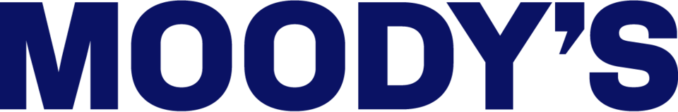

무디스 Moody's Corporation
무디스(Moody's Corporation)는 정부기관과 사업체의 금융 연구·분석을 수행하고 기준 평가 척도로 차입기관의 신용등급을 매기는 미국의 금융 정보 회사이다.
최종 업데이트

무디스는 어떤 브랜드인가
무디스는 미국 뉴욕에 본사를 둔 Moody's Investors Service의 지주회사이다. 산하 회사를 통해 정부기관과 사업체를 대상으로 금융 연구와 분석을 수행하고 차입기관의 신용등급을 평가한다.
스탠더드 앤드 푸어스, 피치 레이팅스와 함께 세계 3대 신용평가 기관으로 불린다. 이들 기관과 A.M.
베스트, 도미니언 본드 레이팅서비스는 미국 국가공인통계평가기관으로 지정됐다. 평가 대상 국가는 1975년 3개에서 1999년 33개, 2000년 100개 이상으로 증가했다.
현재 세계 신용평가 시장의 약 40%를 점유한다.
무디스는 어떻게 시작되고 성장했나
무디스는 1909년 John Moody가 미국에서 세웠으며 현재 본사를 뉴욕에 둔다. 설립 이후 정부기관과 사업체의 금융 연구와 분석을 수행하고 기준 평가 척도에 따라 차입기관의 신용등급을 매겼다.
1975년에는 3개 국가를 평가했다. 1995년 캐나다 사례에서는 국가채권 등급 하락 발표가 정치적·경제적 영향을 가져왔으며, 1999년에는 평가 국가가 33개로 증가했다.
2000년에는 100개 이상의 국가를 평가하는 기관으로 확대했다.
무디스의 브랜드 아이덴티티는 무엇인가
정부기관과 사업체의 금융 상태를 신용등급으로 제시하며 세계 신용평가 시장의 약 40%를 점유한다는 점이 구분 지점이다.
무디스의 대표 제품과 서비스는 무엇인가
무디스의 핵심 사업은 정부기관과 사업체를 대상으로 한 금융 연구, 분석, 신용등급 평가이다. Moody's Investors Service는 이러한 업무를 수행하는 산하 회사이다.
차입기관의 상태를 기준 평가 척도에 따라 신용등급으로 제시한다. 신용등급 체계에서는 철수 등급인 WR과 비등급인 NR을 특별등급으로 사용한다.
국가채권도 평가 대상에 포함하며, 등급 하락 발표는 1995년 캐나다 사례처럼 정치적·경제적 영향을 가져오기도 한다.
무디스는 지금 어떤 상태인가
무디스는 Moody's Investors Service를 거느린 지주회사이며 미국 뉴욕에 본사를 둔다. 현재 최대 주주인 버크셔 해서웨이가 약 13%의 지분을 보유한다.
현재 세계 신용평가 시장의 약 40%를 점유하며, 미국 국가공인통계평가기관으로 지정된 신용평가 기관 가운데 하나이다.
무디스 로고는 어떻게 변해왔나
자주 묻는 질문
무디스는 어느 나라 브랜드인가요?
무디스는 미국의 금융 브랜드입니다.
무디스는 언제 설립되었나요?
무디스는 1909년 설립되었습니다.
무디스의 브랜드 아이덴티티는 무엇인가요?
정부기관과 사업체의 금융 상태를 신용등급으로 제시하며 세계 신용평가 시장의 약 40%를 점유한다는 점이 구분 지점이다.
무디스의 대표 제품은 무엇인가요?
무디스의 핵심 사업은 정부기관과 사업체를 대상으로 한 금융 연구, 분석, 신용등급 평가이다.
무디스는 어느 기업이 소유하고 있나요?
무디스는 Moody's Investors Service를 거느린 지주회사이며 미국 뉴욕에 본사를 둔다.
무디스의 창업자는 누구인가요?
무디스의 창업자는 John Moody입니다(위키데이터 기준).
무디스의 본사는 어디에 있나요?
무디스의 본사는 뉴욕에 있습니다(위키데이터 기준).
출처와 검증
무디스 관련 참고: 공식 웹사이트 · 위키데이터 Q675585 · 한국어 위키백과 · 영어 위키백과. 브랜드명은 한글과 원어를 함께 표기하되 데이터에 없는 표기는 만들지 않습니다. 기원 국가·설립연도는 검수된 정의문에서 확인된 값을 우선하고, 없을 때만 공식 웹사이트 URL이 일치하는 위키데이터 개체의 값을 씁니다. 위키데이터 값은 2026-09-12 기준입니다.